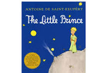
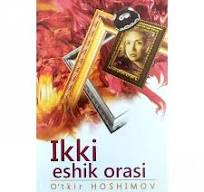
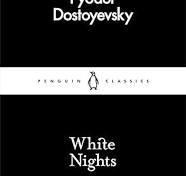

📚My Book Corner
Welcome to my personal book collection.Here you can find my favorite books.
The Little Prince
This book is actually intended for children, but there are many theoretical and profound sayings that many adults should read as well.The story also teaches us that people often forget the beauty of simple things when they grow up.
This book shows that imagination, kindness, and friendship are very important in life.
The Little Prince was written by Antoine de Saint-Exupéry.
The story follows a young prince who travels from planet to planet and meets different characters.
During his journey, he learns about friendship, love, responsibility, and human nature.
Although the book is short and written like a children's story, it has many philosophical ideas.
It is one of the most famous books in the world and has been translated into many languages.

Ikki eshik orasi
One of the most famous Uzbek novels that explores human relationships, destiny, and society.The novel presents different characters and their experiences, showing how history and time affect people's lives.
It is a meaningful book that makes readers think about the value of humanity and family.
Ikki Eshik Orasi is a famous Uzbek novel written by O'tkir Hoshimov.
The book tells stories about people's lives, relationships, and the challenges they experience.
It shows different characters, their emotions, and the effects of difficult historical periods.
The novel focuses on themes such as family, kindness, patience, and humanity.
It is considered one of the important works of Uzbek literature.

Jimjitlik
A thoughtful novel that reflects on human emotions, silence, and personal struggles.Through its characters, the book explores the challenges people face and the emotions they keep inside.
It shows that every person has their own story and feelings.
Jimjitlik is a novel that explores people's inner feelings and the hidden sides of human life.
The story pays attention to emotions, thoughts, and the decisions people make.
The book shows that every person has their own struggles and experiences.
It makes readers think about society, relationships, and the meaning of silence.

The white nights
A touching story by Dostoevsky about loneliness, dreams, and a brief but meaningful connection.The story is simple but emotionally powerful, making readers think about dreams and reality.
It is a short book that leaves a deep impression after reading.
The White Nights is a short story written by Fyodor Dostoevsky.
It tells the story of a lonely young man who meets a woman during several nights in Saint Petersburg.
The story explores themes of dreams, loneliness, hope, and human connection.
Although it is a short work, it has strong emotions and deep psychological ideas.
